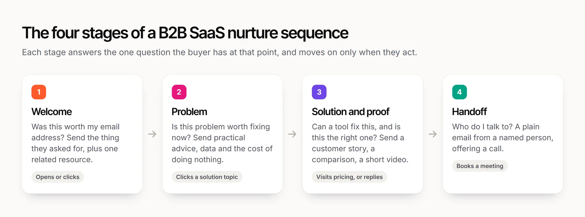

On this page
B2B lead nurturing is the follow-up you send to buyers who showed interest but are not ready to talk to sales. For a B2B SaaS buyer, it is a short series of useful emails that moves them from learning about a problem to asking for a call. What the buyer does decides which email comes next. You can tell it works when nurtured leads turn into sales conversations more often than leads you left alone.
This guide covers the four stages, the triggers that move buyers between them, an example six-email sequence, the cost and how to measure it.
I lead lifecycle and demand generation at Fourward, and my work covers CRM set-up and nurture and trigger email workflows, so I have a stake in this topic. Every number below comes from the publisher's own page, checked on 25 November 2026.
- B2B lead nurturing is following up with interested buyers who are not ready to buy, using content timed to what they do, until they are ready for sales.
- LinkedIn's B2B Institute says 95% of potential buyers are not ready to buy today.
- In a 6sense survey of nearly 4,000 B2B buyers, four out of five deals went to the vendor buyers favoured before they first contacted a seller.
- A good sequence has clear stages, entry triggers and exit triggers, so a buyer who books a demo or becomes a customer stops getting nurture emails.
- Judge it on replies, demos booked and pipeline, not opens. Apple Mail loads email content in the background, which makes open counts unreliable.
What B2B lead nurturing is
Lead nurturing is the work of staying useful to a buyer between their first sign of interest and their first sales call. In B2B SaaS, that first sign is usually a form: a guide download, a webinar sign-up or a free tool. An email address is not a request for a demo. Nurturing keeps you in the buyer's inbox with things that help them decide, so you are the vendor they remember when the project starts.
Nurture, drip and sales follow-up
These three terms get mixed up, but they work differently.
- A drip campaign sends the same emails on a fixed schedule to everyone on a list.
- A nurture sequence starts from a trigger, changes based on what the buyer does, and stops when the buyer reaches a goal such as booking a demo.
- A sales follow-up is a person writing one-to-one to a buyer who has asked to be contacted.
Why most SaaS buyers are not ready yet
Most people who download your guide are not in market, meaning they are not actively looking to buy. Research from two sources explains why that matters.
- Most buyers are between purchases. LinkedIn's B2B Institute says "95% of your potential buyers aren’t ready to buy today". Its reason is that the time between purchases for many B2B products is long. A team whose current contract renews next year is unlikely to switch this quarter.
- Buyers contact sellers late. 6sense surveyed nearly 4,000 B2B buyers for its 2025 report. Buyers first contacted a seller when they were 61% of the way through their buying journey, down from 69% in earlier studies.
- The early favourite usually wins. The same report says "four out of five deals are still won by the “pre-contact favorite.”" In other words, the vendor a buyer prefers before the first call usually wins the deal.
Nurturing is how you become the favourite while the buyer is still reading on their own. Brand building reaches buyers before they fill in a form; nurturing takes over once they have.
The four stages of a nurture sequence
A nurture sequence works best when each stage answers the one question the buyer has at that point. I build it in four stages, plus a slower track for buyers who stop responding.

| Stage | The buyer's question | What you send | Moves on when |
|---|---|---|---|
| 1. Welcome | Was this worth my email address? | The thing they asked for, plus one related resource | They open the asset or click a link |
| 2. Problem | Is this problem worth fixing now? | Practical advice, data and the cost of doing nothing | They click a solution topic or visit a product page |
| 3. Solution and proof | Can a tool fix this, and is this the right one? | A customer story, a comparison, a short product video | They visit pricing, reply, or reach the lead score you set |
| 4. Handoff | Who do I talk to? | A plain email from a named person, offering a call | They book a meeting |
The slow track for quiet buyers
Some buyers finish all four stages without acting. Move them to a monthly newsletter or a check-in every quarter, not another hard push. They are still potential buyers; their timing is just later.
The triggers that move a buyer through it
A trigger is an event recorded in your CRM (customer relationship management system) that starts, changes or stops the sequence. HubSpot describes enrollment triggers as a way to "automatically enroll records into workflows", for example "when a form has been submitted."
Entry triggers
- Gated content. A guide, template or report behind a form.
- Webinar sign-ups, with one sequence for people who attended and another for people who did not.
- Free tool sign-ups, and free trials that ended without a purchase.
HubSpot's docs note that, by default, a record is enrolled only the first time it meets the criteria. Turn on re-enrollment if the same buyer can come back through a second form.
Behaviour triggers
- Pricing page visits. A buyer who views pricing is closer to a decision. Skip them ahead to the handoff email.
- Comparison page visits. Send the proof email next, because they are already comparing options.
- A reply to any email. Stop the automation and pass the reply to a person.
- Company-level research. If your intent data shows the account researching your category, raise its priority.
Lead scoring turns these signals into one number. HubSpot splits scores into two kinds. Fit scores "qualify records based on their demographic information through property values", such as job title or company size. Engagement scores "qualify records based on their actions and interactions", such as visits and clicks. I set the handoff so it needs both: the right company and recent activity.
Exit triggers
- The buyer books a demo or becomes a customer. In HubSpot, a contact who meets a workflow goal is "automatically unenrolled from the workflow before the next action executes". HubSpot's own example of a goal is when "the contact's Lifecycle stage changes to Customer."
- The buyer unsubscribes. Respect it at once, across every sequence.
- The buyer should never have been enrolled. Keep a suppression list of existing customers, competitors and students, so they never enter the sequence.
An example six-email sequence
Here is a sequence for a buyer who downloaded a guide but did not ask for a demo. The timing is my starting point, not a rule, so stretch it if your sales cycle is long.
- Email 1, day 0: deliver what they asked for. Send the guide link at once, with one line on who wrote it and one related resource. Do not ask for a demo yet.
- Email 2, day 3: name the problem. Share the most useful point from the guide, for example the most common mistake. End with one question they can answer by reply, such as "Which of these sounds like your team?"
- Email 3, day 7: show the cost of waiting. Give a worked example of what the problem costs in time or money each month. Link a checklist or a simple calculator.
- Email 4, day 12: show proof. Share one customer story with a clear before and after. A well-written case study does this job better than a list of logos.
- Email 5, day 18: compare honestly. Explain how your approach differs from the tool or spreadsheet they use today. Link a comparison page if you have one.
- Email 6, day 25: hand off to a person. Send plain text from a named person on your team. Ask one question: "Is this a project for this quarter, or later?" Either answer tells you which track they belong on.
Behaviour triggers override this schedule. A buyer who visits pricing after email 2 should get email 6 next, not email 3.
What every nurture email needs
- One job and one link. With one link, you know exactly what a click means.
- A real sender. A named person can receive replies and a "no-reply" address cannot. Replies are your strongest signal.
- A plain subject line that says what is inside.
- An easy way out. Google's sender guidelines say "Marketing messages and subscribed messages must support one-click unsubscribe."
Free check. 75 checks, one score out of 100, under a minute.
How to tell the nurture is working
Start by ignoring open rates. Apple says its Mail Privacy Protection "downloads remote content in the background by default". That loads the tracking pixel, a tiny invisible image that reports opens, so many emails count as opened whether or not anyone read them. Watch these signals instead.
| Signal | What it tells you | Warning sign |
|---|---|---|
| Clicks per email | Which topics buyers care about | One email gets far fewer clicks than the rest |
| Replies | Whether the emails read like a person wrote them | No replies across the whole sequence |
| Stage movement | Whether buyers move from problem to proof to handoff | Most buyers stop at stage 2 |
| Goal conversion rate | The share of enrolled buyers who reach your goal, such as a booked demo (HubSpot shows it in the Top metrics report) | Flat month after month |
| Sales qualified leads and pipeline | Whether nurtured leads become real deals | No difference from leads you did not nurture |
| Unsubscribes and spam reports | Whether you send too much, or to the wrong people | A spike after one particular email |
Compare against a holdout group
The cleanest test is a holdout group: a small random share of new leads, for example one in ten, that does not get the sequence. After a full sales cycle, compare how many in each group became sales qualified leads (SQLs), meaning leads that sales accepted as worth a call. If the nurtured group does not do better, change the content before you add more emails.
Watch your spam rate
Google tells senders to "Keep spam rates reported in Postmaster Tools below 0.10%" and to "avoid ever reaching a spam rate of 0.30% or higher". Postmaster Tools is Google's dashboard for email senders. A rising spam rate usually means you are emailing people who never expected to hear from you.
What you need to run it, and what it costs
You need three things: a CRM that records what buyers do, an email tool that can branch on those events, and someone to write the emails. I use HubSpot as the example because my work covers HubSpot set-up. Here is what its plans cost on its pricing page.
- Marketing Hub Starter starts at $7 a month per seat. HubSpot's help centre does not list workflow goals for Starter.
- Marketing Hub Professional starts at $800 a month on annual billing and includes 3 core seats. Extra core seats start at $45 a month. Workflow goals, the exit trigger described above, are available from Professional up.
- Other marketing automation tools can run the same sequence. Before you buy, check their documentation for three features: entry triggers, branches based on behaviour, and goals that stop the sequence.
The larger cost is usually writing time, not software: six emails, plus the guides, stories and comparison pages they link to.
Common lead nurturing mistakes
- Asking for a demo in the first email. The buyer asked for a guide. Give them the guide.
- One sequence for everyone. A founder and an IT manager have different questions. Split by role or company size once you have enough leads.
- No exit trigger. Customers who still get "book a demo" emails can tell nobody is paying attention.
- Judging by open rate. Opens are inflated by privacy features, so they hide problems.
- Handing off without context. Sales should see what the buyer downloaded, clicked and visited before the first call.
- Letting it go stale. Check every link, price and customer story each quarter.
A full SEO, AEO and GEO audit, plus 30 minutes with our team to walk you through it.
FAQs
What is B2B lead nurturing?
B2B lead nurturing is following up with buyers who showed interest but are not ready to buy. You send useful content timed to what they do, until they are ready to talk to sales.
How many emails should a B2B nurture sequence have?
There is no fixed number. I start with six emails over about four weeks, one for each question the buyer has, and add more only if the holdout test shows the sequence is working.
How long should a lead nurture sequence run?
Run the main sequence for a few weeks, then move quiet buyers to a slower monthly or quarterly track. B2B buyers often take months to buy, so the slow track matters as much as the main one.
What is the difference between a drip campaign and lead nurturing?
A drip campaign sends the same emails on a fixed schedule to everyone. A nurture sequence starts from a trigger, changes when the buyer acts, and stops when they reach a goal such as booking a demo.
How do you measure lead nurturing?
Measure clicks, replies, stage movement, demos booked and pipeline, not open rates. Compare nurtured leads with a holdout group that did not get the emails, and keep your spam rate below Google's 0.10% guideline.
Sources
- 95-5 Rule, LinkedIn B2B Institute, checked 25 November 2026.
- The B2B Buyer Experience Report for 2025, 6sense, checked 25 November 2026.
- Set your workflow enrollment triggers, HubSpot Knowledge Base, updated 4 September 2026, checked 25 November 2026.
- Use goals in contact-based workflows, HubSpot Knowledge Base, updated 3 August 2026, checked 25 November 2026.
- Overview of the lead scoring tool, HubSpot Knowledge Base, updated 16 November 2026, checked 25 November 2026.
- Marketing Software Pricing, HubSpot, checked 25 November 2026.
- Mail Privacy Protection & Privacy, Apple, dated 12 December 2025, checked 25 November 2026.
- Email sender guidelines, Google Gmail Help, checked 25 November 2026.